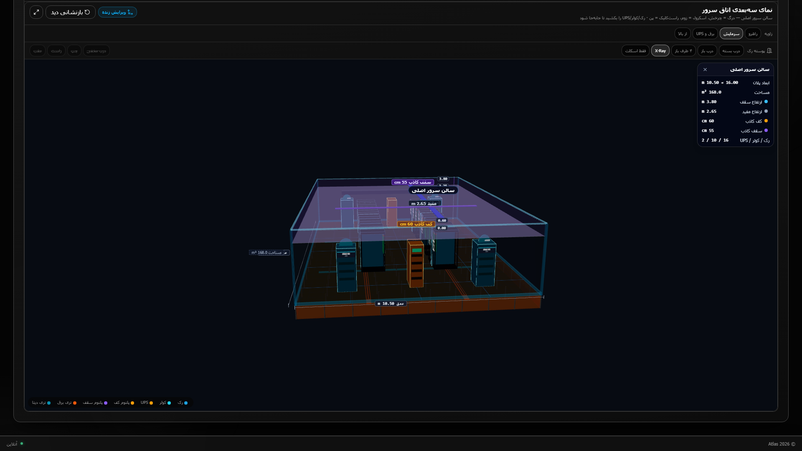
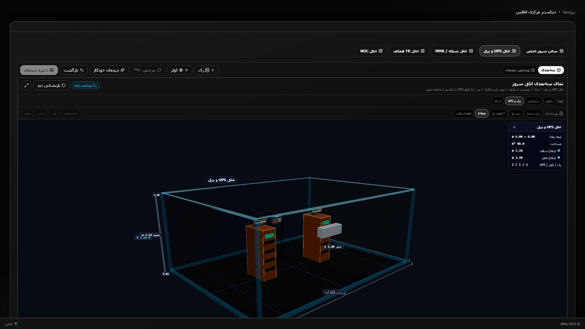
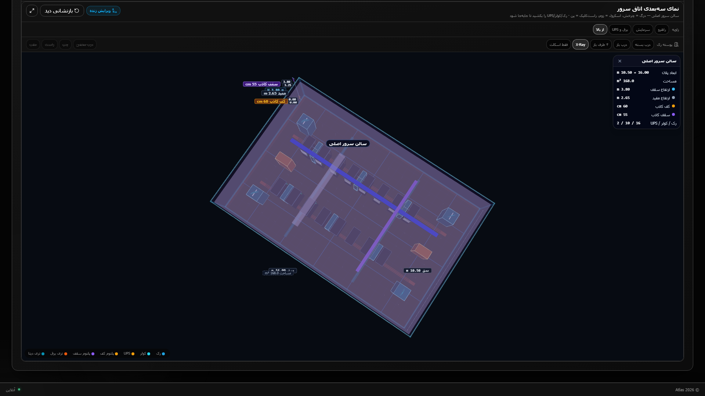

قابلیت
کارت شهر، پروژه، تجهیز، مدار، IP و هشدار — صفر هشدار یعنی سبز، نه سکوت.
ATLAS · v3.19 · DCIM · IPAM · NMS
Atlas یک محصول کامل برای مستندسازی، ظرفیت و عملیات شبکه است — DCIM فیزیکی در کنار IPAM، مدار WAN، کشف CDP/LLDP و مانیتورینگ زنده. استقرار داخل سازمان، رابط فارسی، و پوشش هلدینگ چندسایته در چند شهر.
01 · COMMAND CENTER
عدد درشت، رنگ وضعیت، و نقشهٔ ایران با پین هر شهر. مدیر شبکه بدون ورود به رک میبیند کدام سایت در چه وضعیتی است.
کارت شهر، پروژه، تجهیز، مدار، IP و هشدار — صفر هشدار یعنی سبز، نه سکوت.
نقشهٔ ایران با پین جغرافیایی کنار رویدادهای NOC، As-Built و BOM.
تم تیره برای اتاق فرمان، سایدبار فارسی، اعلان خواندهنشده روی زنگ.
02 · PORTFOLIO
هلدینگ چندسایته: دیتاسنتر تهران، دفتر مرکزی تبریز، نیروگاه بعثت تهران، گلخانه هوشمند اصفهان و دفتر منطقه مشهد. کاور پروژه نمای مکان است، نه فیسپلیت سوئیچ.
فیلتر نوع سایت، وضعیت اجرا، و عکس صحنه برای هر شهر.
عکس محصول فقط در کاتالوگ تجهیزات است؛ هویت سایت از صحنهٔ واقعی میآید.
سازمان واحد، چند شهر، پیشرفت و بودجه روی کارت.
03 · PROJECT BRIEF
یک صفحهٔ اجرایی برای مدیر پروژه: ظرفیت فیزیکی، شبکه و مالی در یک نگاه.
کاور سالن، حلقهٔ پیشرفت، تاریخ شروع/پایان و بودجه.
عدد پهنا و runtime UPS جایی است که تصمیم عملیاتی گرفته میشود.
نقش مدیر سیستم · وضعیت در حال اجرا · شهر تهران.
04 · 3D DIGITAL TWIN
الگوی Sunbird 3D Visualization: راهروی رک، محتویات کابینت، In-Row، و اتاق برق. چرخش، زوم و پیشتنظیم زاویه (راهرو، سرمایش، UPS، از بالا).



دو راهروی رک، In-Row، لوله سقف، ستون، کف کاذب و یونیت UPS.
قبل از ورود به سالن، ظرفیت U و مسیر سرمایش دیده میشود.
اتاقها: سالن اصلی، MMR، TR، NOC، برق. حالت درب بسته / باز / X-Ray / اسکلت.
05 · SPINE-LEAF
پنج طبقهٔ استاندارد: WAN، لبه HA، Spine ۱۰۰G، Leaf، سپس سرور و برق. الگوی Cisco بدون تقاطع برچسب؛ ذخیره همان طرح پروژه است.
برچسب لایه در سمت راست بوم، یال کوتاه (100G / 10G / HA)، پالت جمعشو.
نقشه طراحی و گراف کشف در یک محصولاند؛ HLD همان جایی است که عملیات انجام میشود.
Peer-Link ۱۰۰G · لبه HA · پردیس CORE و TR · UPS دو مسیر روی لایه سرویس.
06 · IPAM
نقش هر VLAN مشخص است: Management، Servers، Storage، Voice، CCTV، Guest، DMZ، WiFi روی 10.48.0.0/16.
VLAN ID، نام، CIDR، گیتوی، وضعیت active، شمارش IP آزاد.
نقش VLAN پروژه جدا از نام است؛ CSV ورود/خروج برای ممیزی.
سابنتهای 10.48.10 تا 10.48.80 طبق طرح آدرسدهی سازمانی.
07 · POWER
درصد بار روی ظرفیت نامی، دقیقهٔ باتری باقیمانده، و مسیر A/B جدا. اگر بار تجهیزات با خروجی UPS نخواند، همان کارت نشان میدهد.
کارت runtime، ظرفیت به وات، درصد بار، مدل APC Galaxy.
قطع یک مسیر سالن را خاموش نمیکند؛ مسیر A و B در رک جدا از باتریبانک اتاق برق است.
خواندن SNMP روی خود UPS ذخیره میشود؛ اسکن کشف را خراب نمیکند.
08 · DISCOVERY
گراف از Walk همسایه ساخته میشود نه از کشیدن دستی. فیلتر زیرساخت درخت Spine/Leaf را جدا میکند؛ پایانه و UPS روی لایهٔ دیگر میمانند.
نودهای هسته و دسترسی با لینک رنگی، MiniMap، جدول همسایه زیر گراف.
کشف گراف طراحی را عوض نمیکند؛ دکمهٔ «از Discovery» همان داده را به توپولوژی میآورد.
پروتکل یال (CDP / LLDP / هر دو) روی لجند است؛ چاپ و تصویر از همان بوم.
09 · LIVE MONITOR
رنگ نود یعنی سطح ناهنجاری. ICMP و SNMP سبک روی همان فابریک overlay میشود. قرمز قطع، زرد آستانه، سبز سالم.
ستون هشدار با علت مشخص، weathermap رنگی، پرش از هشدار به نود.
NOC در یک نگاه میبیند کدام لینک یا دستگاه مشکل دارد.
آستانه دما/CPU/حافظه قابل تنظیم است؛ فیلتر «فقط هشدارها» همان نودها را دوباره میچیند.
10 · MODELS LIBRARY
مدل بدون عکس در رک ۳D جعبه خاکستری است. اینجا همان فایل روی فیسپلیت مینشیند: سوئیچ، فایروال، سرور، UPS — عکس جلو و عقب روی زمینه روشن.
شبکه مدل با پسزمینه روشن، شمارش عکس، برچسب مجموعه، فیلتر برند و نوع.
شناسایی مدل هنگام نصب و مستندسازی رک؛ کاور پروژه صحنهٔ سایت میماند.
چند هزار مدل با تصویر جلو و عقب؛ تکمیل آنلاین برای مدل بدون عکس.
11 · CONNECTIVITY
ISP در چپ، ابر MPLS بالا، دیتاسنتر مرکز، سایتها در راست: نیروگاه تهران، گلخانه اصفهان، دفتر تبریز و دفتر مشهد. برچسب یال کوتاه است (DIA 1G، MPLS، فیبر ۱۰G).
نقشه اینترنت با رنگ گره، خروجی PDF/PNG/CSV، قالب لینک.
مدار در IPAM و توپولوژی همان پروژه است؛ منبع حقیقت یکی است.
ورود/خروج، کراسکانکت، مانیتورینگ و رخدادها تب جدا دارند.
12 · SITE PLAN
طبقهٔ بالاتر از ۳D رک: ساختمان، همکف، ابزار رسم دیوار و برچسب.
کارت نقشه، بوم CAD، ویژگی عنصر، مختصات.
از Visio میتوان اتاق DCIM ساخت؛ پلان سایت جدا از چیدمان رک میماند.
زوم، تمامصفحه، نقشهٔ جدید، لایهبندی عناصر.
POSITIONING
هدف پوشش همان شغلها در یک محصول فارسیِ داخل سازمان است، نه کپی برند خارجی.
| قابلیت | Sunbird DCIM | PRTG | SolarWinds NPM | Atlas v3.19 |
|---|---|---|---|---|
| سالن / رک سهبعدی + عکس مدل | قوی (حرارت/باسوی هم) | ندارد | ندارد | سالن، In-Row، UPS، فیسپلیت |
| کشف CDP/LLDP و گراف | دیاگرام از دیتابیس مدار | سنسور + UVexplorer | NetPath / topology | Walk CDP/LLDP روی فابریک |
| پایش ICMP/SNMP جدا از کشف | Power IQ جدا | هسته محصول | هسته محصول | صفحهٔ /monitoring |
| IPAM / VLAN / مدار WAN | پورت و ظرفیت | تمرکز پایش | IPAM ماژول جدا | در همان پروژه |
| کتابخانه مدل با عکس | ۴۴k+ مدل | — | — | ۶٫۳k مدل / ۵٫۳k عکس |
| رابط فارسی + استقرار IIS داخلی | انگلیسی / ابری یا ویندوز | چندزبانه | انگلیسی | RTL فارسی، Waitress+IIS |
| نقشه حرارتی / PDU پریز | کامل | — | — | در نقشه راه |
ALSO IN THE PRODUCT
| مسیر | کار |
|---|---|
| زیرساخت → تجهیزات / جدول رک | Elevation U با عکس مدل |
| گالری تصاویر / بکاپ کانفیگ | مستند visio و آرشیو کانفیگ سوییچ |
| انبار و خرید | گردش کالا و رسید نصب |
| نقشه ادغامشده هلدینگ | لینک بین پروژههای چند شهر |
| گزارشها / جستجو / Visio | ممیزی CSV/PDF و ورود پلان |
| تنظیمات | SNMP، شهر، RBAC |